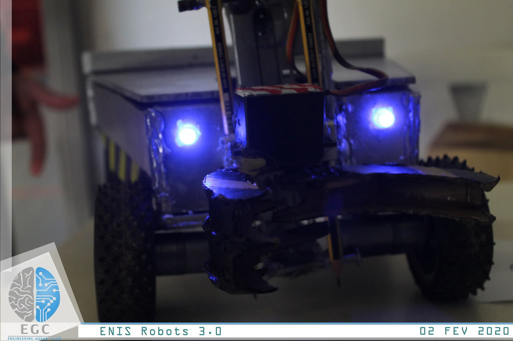
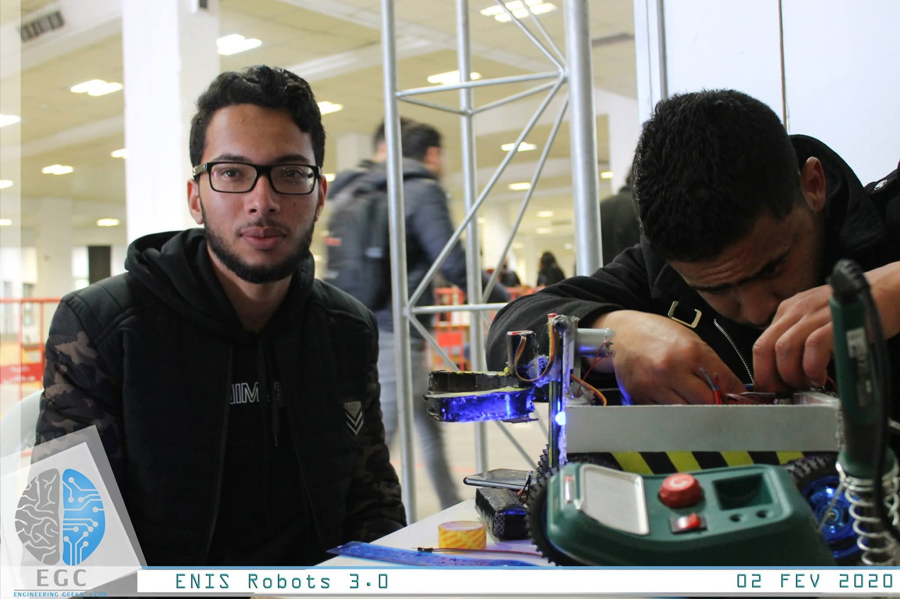
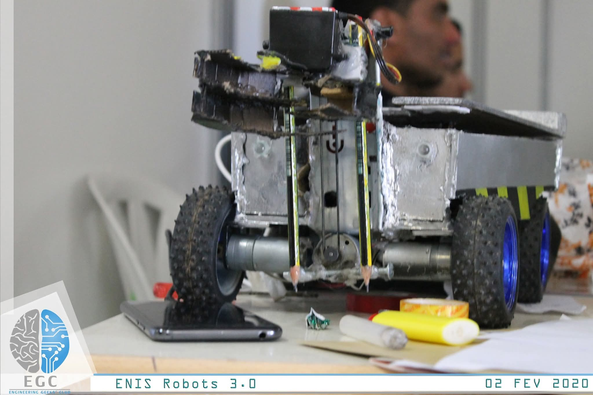
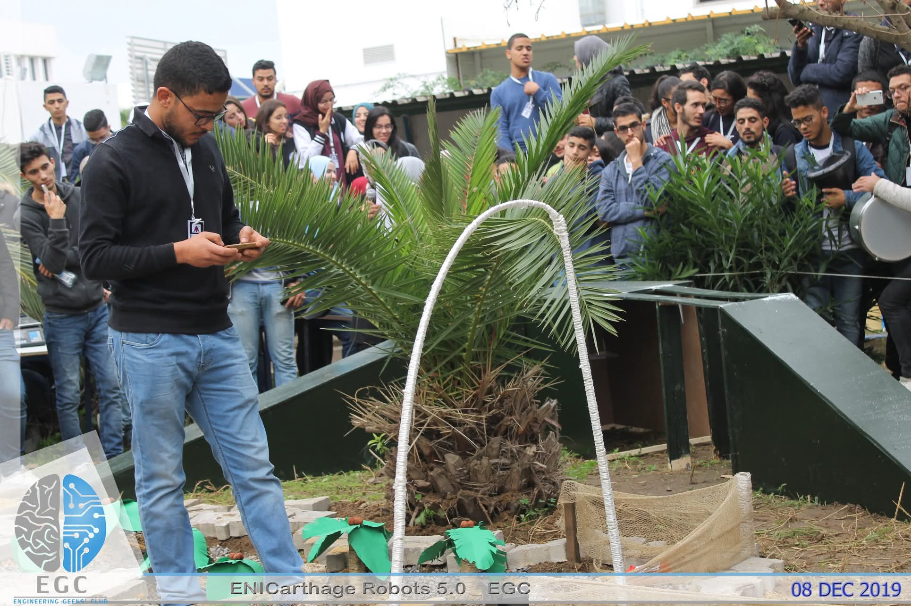
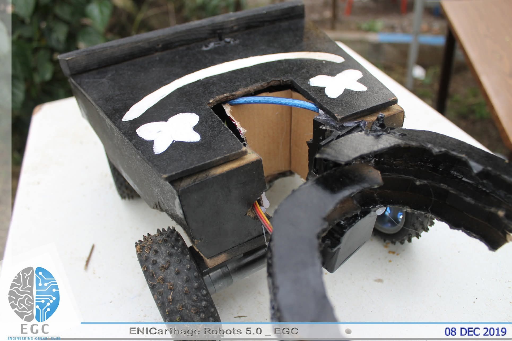
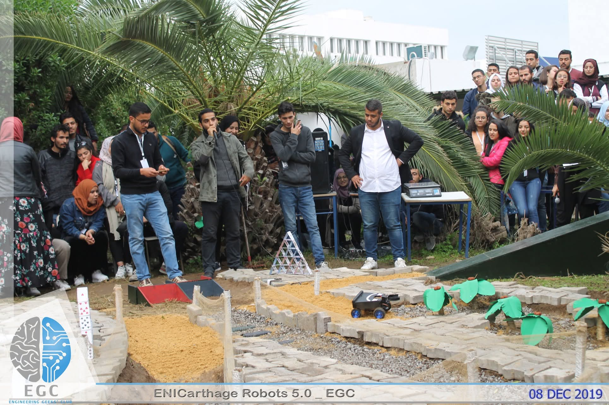
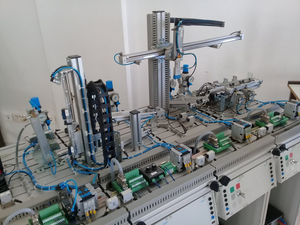
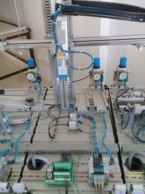
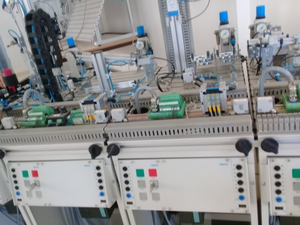

Driven by commitment
As a delegate representing the Sidi Bouzid office, I participated in the first general conference of the National Association of University Clubs "ANCU".
My participation as an organizing member of the National Student Forum in its third edition for the National Association of University Clubs "ANCU".
I pitched in a national "Hackathon" competition with a group of engineers and won second place with a project idea for irrigation management using "IoT".
Engineering Geeks Club (EGC) — National Robotics Competition, Sfax
Two months after ENICarthage, we were back — but not with the same robot.
Every competition teaches you something, and what ENICarthage taught us was clear:
the robot needed to do more than move. ENIS Robots 3.0 had strict
homologation requirements, and to qualify, our robot had to be capable of
picking up an object from a 15 cm elevation and delivering it
precisely to unlock a gate — then continue navigating an obstacle course to the finish.
So we engineered an upgrade: a servo-actuated elevator gripper arm
mounted on the front of the chassis — controllable in real time, precise enough to
grab a target object and release it on command. The robot also got a structural
rebuild: reinforced aluminum chassis panels, blue LED headlights for visibility,
and cleaner internal wiring to survive the abuse of competition terrain.
The challenge itself was a timed run — not just obstacle avoidance,
but a full sequence: approach the elevated object, grip it, lower it, deliver it to
the gate trigger, watch the gate open, then race through the remaining course before
time runs out. Every second counted. Every mechanism had to work on the first try.
That's the kind of pressure that turns builders into engineers.



Engineering Geeks Club (EGC) — National Robotics Competition, Tunis
Every engineer remembers their first competition. Mine was ENICarthage Robots 5.0,
organized by the Engineering Geeks Club at ENIC Carthage — one of Tunisia's most
anticipated student robotics events. Dozens of teams, a packed outdoor arena, and
hundreds of eyes watching every move your robot makes.
Our entry was a Bluetooth-controlled ground robot, built from scratch:
a custom chassis, DC motors with rubber-grip wheels, a motor driver, and an Arduino
brain — all commanded in real time from a smartphone app. The arena itself was a
challenge course designed to test navigation, precision, and control under pressure —
ramps, gravel zones, obstacles, and tight corridors that punished any sloppy driving.
The robot took hits. The chassis cracked. The wiring held. And standing there in front
of that crowd, phone in hand, watching something I built with my own hands move through
that course — that was the moment I understood why engineers build things.
Not just to make them work, but to make them perform.



ISET Sidi Bouzid — Festo MPS Pneumatic & PLC Training Lab
Before any simulation software, before TIA Portal on a laptop — there was this:
a real Festo Modular Production System bolted to a lab bench,
hissing with compressed air and alive with sensor signals. This is where my hands
first touched industrial automation.
The task was to program and control a Pick & Place station —
built from pneumatic cylinders, solenoid valves, pressure regulators, and proximity
sensors, all coordinated through a PLC running Siemens STEP 7 and
programmed in Grafcet (SFC). The station had to pick a workpiece,
transfer it via a gantry-style XY axis, and place it precisely at a target position —
entirely autonomously.
It sounds straightforward — until you're staring at 40+ pneumatic fittings and a
control panel that demands you understand every I/O address before the first cylinder
extends. That pressure — the real kind — taught me what no simulation ever could:
how to read a system before you dare command it.



2020 All Rights Reserved. Design by Free Html Templates Distribution by ThemeWagon